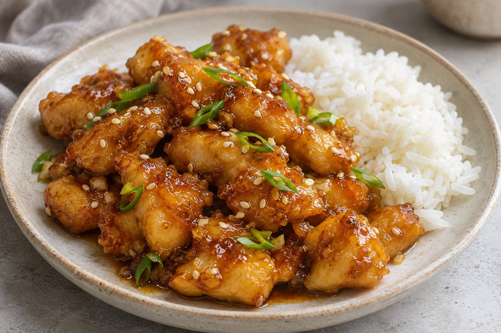

Knuspriges Hähnchen mit Honig-Knoblauch-Sauce
Honey Garlic Chicken

Knusprig frittiertes Hähnchen in einer glänzenden Sauce aus Honig, Knoblauch, Sojasauce und Reisessig, garniert mit Sesam und Frühlingszwiebelgrün.
Zutaten
Für das Hähnchen
- 500 g Hähnchenbrust, in mundgerechte Stücke geschnitten
- 1 EL Sojasauce für das Hähnchen
- 1 Eiweiß oder ½ verquirltes ganzes Ei
- ¼ TL schwarzer Pfeffer
- ⅓–½ Cup Maisstärke, nach Bedarf
- Geschmacksneutrales Öl zum Frittieren
Für die Honig-Knoblauch-Sauce
- 1 EL Butter
- 4–5 Knoblauchzehen, fein gehackt
- 3 EL Honig
- 2 EL Sojasauce für die Sauce
- 1 EL Reisessig
- 2 EL Wasser
Zum Garnieren
- Sesamsamen
- Grüne Teile von Frühlingszwiebeln, in dünne Scheiben geschnitten
Zum Servieren (im Zubereitungstext genannt)
- Reis zum Servieren (Menge nicht angegeben)
Zubereitung
- Die Hähnchenstücke mit 1 EL Sojasauce, dem Eiweiß oder dem halben verquirlten Ei und dem schwarzen Pfeffer vermischen. Abdecken und mindestens 15 Minuten im Kühlschrank marinieren.
- Zunächst ⅓ Cup Maisstärke direkt zum Hähnchen geben und gut vermischen. Nach und nach mehr hinzufügen, bis an jedem Stück eine klebrige Hülle haftet, ohne dass sich Flüssigkeit sammelt oder trockenes Pulver zurückbleibt.
- Öl in einer tiefen, schweren Pfanne auf 175 °C erhitzen. Das Hähnchen in kleinen Portionen etwa 4–5 Minuten unter gelegentlichem Wenden frittieren, bis es goldbraun und vollständig durchgegart ist und eine Kerntemperatur von 74 °C erreicht hat. Auf einem Kuchengitter abtropfen lassen.
- Die Butter in einer separaten Pfanne bei mittlerer bis niedriger Hitze schmelzen. Den Knoblauch hinzufügen und 30 Sekunden dünsten, bis er duftet.
- Honig, 2 EL Sojasauce, Reisessig und Wasser einrühren. Sanft köcheln lassen, bis die Sauce glänzt und dick genug ist, um einen Löffel zu überziehen. Nach 2–3 Minuten erstmals die Konsistenz prüfen.
- Den Herd ausschalten. Das frittierte Hähnchen hinzufügen und kurz schwenken, bis alle Stücke gleichmäßig mit Sauce überzogen sind.
- Mit Sesamsamen und dem Frühlingszwiebelgrün garnieren. Sofort mit Reis servieren.
Hinweise zur Quelle
Ins Deutsche übersetzt nach dem vom Nutzer bereitgestellten englischsprachigen Rezeptkommentar von @im.100.percent.sane unter dem verlinkten Reel. Dieser Kommentar wurde nicht als Urheberschaft am ursprünglichen Video gewertet. Die Cup-Angabe für Maisstärke wurde unverändert beibehalten, da kein Cup-Standard angegeben ist. Die Mindestmarinierzeit von 15 Minuten, Frittierzeit pro Portion von ca. 4–5 Minuten und die Angaben zur Sauce bleiben in den Schritten erhalten; daraus wurde keine Gesamtzeit errechnet. Portionszahl, Gesamtzeit sowie Mengen für Öl, Garnitur und Reis sind nicht angegeben. Reis wird nur im Servierschritt der Quelle genannt.
Originalquelle: Rezeptkommentar von @im.100.percent.sane zum Instagram-Reel.